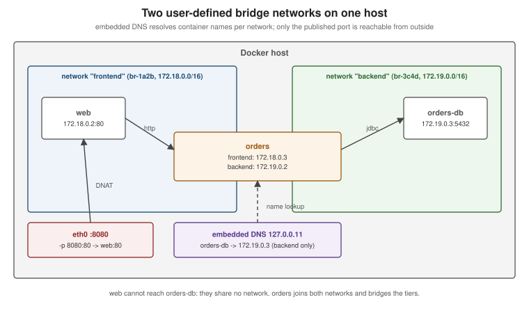

Networking
|
This content was generated with the assistance of AI and should be verified against the official documentation before being relied on in production. |
Every container gets its own network namespace — its own interfaces, routing table and ports — and Docker connects
those namespaces to each other and to the outside world through networks. Learning Docker (chapter 6) explains
this through the docker0 bridge and NAT, and chapter 8 through --link. Both are still true at the lowest level,
but the model you use today is different: user-defined networks with built-in DNS. This page describes networking
in Docker Engine 29.8.x.
Network drivers
| Driver | What it does | Use it for |
|---|---|---|
|
The pre-created network named |
Nothing new — it exists for backward compatibility |
|
A bridge you create with |
Every multi-container application on one host (Compose creates one per project) |
|
No network isolation: the container shares the host’s network namespace. |
Maximum network performance, tools that must see host interfaces |
|
Only a loopback interface. |
Batch jobs that must not have network access |
|
A virtual network spanning several Docker hosts (VXLAN), used by Swarm services. |
Multi-host clusters (see Orchestration) |
|
Give containers addresses directly on the physical network (a MAC address each, or shared MAC with L2/L3 modes). |
Legacy applications that expect to be on the LAN |
Derived from Networking overview and Network drivers.

User-defined bridges and DNS
docker network create backend
docker run -d --name orders-db --network backend -e POSTGRES_PASSWORD=dev-only-password postgres:18.1
docker run -d --name orders --network backend --network-alias api \
-e SPRING_DATASOURCE_URL=jdbc:postgresql://orders-db:5432/postgres orders-service:1.4.0
docker run --rm --network backend busybox:1.37 nslookup orders-db # resolved by Docker's embedded DNS (127.0.0.11)
docker network create frontend
docker network connect frontend orders # a container can join several networks
docker network inspect backend # subnet, gateway, attached containers
docker network ls
docker rm -f orders orders-db # a network with attached containers cannot be removed
docker network rm backend frontendDerived from Bridge network driver and
docker network. The embedded DNS server at 127.0.0.11
answers for container names and aliases on the networks a container is attached to and forwards everything else to
the host’s resolvers. Containers on different user-defined networks cannot reach each other unless one is connected
to both — which is how you separate a public-facing tier from a database tier.
Publishing ports
A container’s ports are reachable from other containers on the same network without any configuration. To make a port reachable from the host or other machines, publish it:
| Flag | Effect |
|---|---|
|
Host port 8080 (all host interfaces, IPv4 and IPv6) to container port 80/tcp |
|
Only reachable from the host itself |
|
UDP instead of TCP |
|
Container port 80 to a random free host port |
|
Every port declared with |
docker run -d --name web -p 127.0.0.1:8080:80 nginx:1.29
docker port web # 80/tcp -> 127.0.0.1:8080
curl -s http://127.0.0.1:8080 >/dev/null && echo reachableDerived from Port publishing and mapping. Two points the official page stresses:
-
Publishing is insecure by default:
-p 8080:80listens on every host interface, so the port is reachable from the network, not just from your machine. Bind development databases and debug ports to127.0.0.1. -
EXPOSEis documentation: it records which ports the image listens on and feeds-P, but publishes nothing by itself.
Reaching the host from a container
A container sometimes needs a service running on the host — an IDE-run application that a container calls back,
or Prometheus scraping a locally run service. Docker Desktop provides the name host.docker.internal; on Linux the
same name is created with the special host-gateway value:
docker run --rm --add-host=host.docker.internal:host-gateway curlimages/curl:8.16.0 \
-s http://host.docker.internal:8080/actuator/healthIn Compose, the equivalent is extra_hosts: ["host.docker.internal:host-gateway"]. Derived from
--add-host and
Docker Desktop networking.
DNS and IPv6
-
Containers on the default bridge inherit the host’s
/etc/resolv.conf(minus localhost resolvers); containers on user-defined networks use the embedded DNS server. Override with--dns,--dns-searchand--dns-option, or daemon-wide indaemon.json. -
IPv6 is opt-in per network:
docker network create --ipv6 --subnet 2001:db8:1::/64 v6net. Without it, ports published on the host’s IPv6 addresses are proxied to the container’s IPv4 address.
Derived from DNS services and Use IPv6 networking.
Packet filtering and firewalls
On Linux, Docker programs the kernel’s packet filter to implement NAT, port publishing and network isolation. Two backends exist:
-
iptables (the default): Docker creates its own chains (
DOCKER,DOCKER-FORWARD,DOCKER-INGRESS, …) and aDOCKER-USERchain that it never modifies, where you add rules that must apply to container traffic — for example restricting a published port to a source range:sudo iptables -I DOCKER-USER -i eth0 ! -s 192.0.2.0/24 -j DROP -
nftables (experimental since Engine 29.0): enabled with
"firewall-backend": "nftables"indaemon.json. Docker creates its own nftables tables; there is noDOCKER-USERchain, so custom rules go into your own tables with the right priority. It does not enable IP forwarding for you — the daemon refuses to start bridge networks that need it until you enable it (or set--ip-forward=false).
The consequence both backends share, and the most common surprise: published ports bypass host firewalls such as
ufw and firewalld’s default zones, because Docker’s NAT happens before those rules are evaluated. Restrict
exposure by binding to 127.0.0.1, by DOCKER-USER rules, or by not publishing at all. Derived from
Packet filtering and firewalls,
Docker with iptables and
Docker with nftables.
Proxies
Behind a corporate proxy, three different things may need proxy settings: the daemon pulling images
(daemon.json "proxies" or systemd environment), the build (--build-arg HTTP_PROXY=…, which BuildKit
treats as a predefined argument that does not invalidate the cache), and the containers (the CLI injects
HTTP_PROXY, HTTPS_PROXY and NO_PROXY from ~/.docker/config.json "proxies"). See
Daemon proxy configuration and
Use a proxy server with the Docker CLI.
Legacy container links (historical)
Learning Docker (chapter 8) connects containers with --link db:db, which added a hosts entry and injected
DB_PORT_5432_TCP_ADDR-style environment variables. Links only ever worked on the default bridge, are deprecated,
and since Engine 29 the environment variables are no longer injected. Use a user-defined network and connect by
container name or --network-alias instead, as shown above. See
Legacy container links.
Likewise, the chapter 6 picture of docker0 plus NAT describes only the default bridge. It is still how the
default network works, but user-defined bridges (one Linux bridge per network, named br-<id>) are what Compose and
every example in this section use.